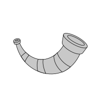

heimdallr.utilities.server.github_org_generators.DirectionEnum
¶
class
heimdallr.utilities.server.github_org_generators.
DirectionEnum
(
value
)
[source]
¶
Bases:
Enum
An enumeration.
__init__
(
)
¶
Attributes
asc
desc

heimdallr
Navigation
heimdallr
heimdallr.dist_is_editable
heimdallr.get_version
heimdallr.configuration
heimdallr.entry_points
heimdallr.server
heimdallr.utilities
heimdallr.utilities.date_tools
heimdallr.utilities.nvidia
heimdallr.utilities.publisher
heimdallr.utilities.server
heimdallr.utilities.server.du_utilities
heimdallr.utilities.server.exclude
heimdallr.utilities.server.github_org_generators
heimdallr.utilities.server.github_org_generators.get_pull_request
heimdallr.utilities.server.github_org_generators.utc_to_epoch
heimdallr.utilities.server.github_org_generators.yield_issues
heimdallr.utilities.server.github_org_generators.yield_org_issues
heimdallr.utilities.server.github_org_generators.yield_org_prs
heimdallr.utilities.server.github_org_generators.yield_org_repos
heimdallr.utilities.server.github_org_generators.yield_prs
heimdallr.utilities.server.github_org_generators.DirectionEnum
heimdallr.utilities.server.github_org_generators.IssueSortEnum
heimdallr.utilities.server.github_org_generators.PullRequestSortEnum
heimdallr.utilities.server.github_org_generators.RepoSortEnum
heimdallr.utilities.server.github_org_generators.RepoTypeEnum
heimdallr.utilities.server.github_org_generators.StateEnum
heimdallr.utilities.server.google_calendar
heimdallr.utilities.server.gpu_utilities
Notes
Getting Started
Related Topics
Documentation overview
heimdallr
heimdallr.utilities
heimdallr.utilities.server
heimdallr.utilities.server.github_org_generators
Previous:
heimdallr.utilities.server.github_org_generators.yield_prs
Next:
heimdallr.utilities.server.github_org_generators.IssueSortEnum
Quick search